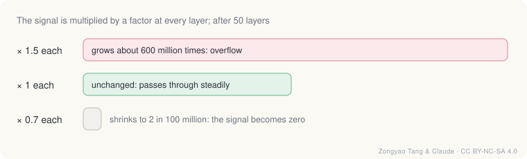

The thread: training means making the loss smaller, so where does the loss function come from → knowing what to reduce, how to reduce it step by step is the optimizer's job → whether a deep network can start training at all depends on initialisation → once the loss is down, whether the model has really learned shows in how it does on data it has never seen. These four answer four sides of "why a model can learn".
Part 1 · Principles of deep learning1.2 Loss, optimisation and generalisation
Translated by AI (Anthropic's Claude) from the Chinese edition. The Chinese original is the reference.
This unit answersWhy can a model learn? What decides how fast? Why can it learn too much?
Follows 1.1: you know how gradients are computed; this unit is about what to do with them.
- The loss function is not made up: it comes from maximum likelihood
- Adam = momentum + a step size of its own for each parameter
- Initialisation decides whether a signal can pass through dozens of layers
- A low training error does not mean the model has learned: look at data it has not seen
Explanation
1The loss function is not made up: it comes from maximum likelihood
Let the model output the parameters of a probability distribution, then ask "which parameters make the observed data most likely to appear"; take the negative logarithm and you have the loss. Assume the output is Gaussian and you get mean squared error; assume it is a categorical distribution and you get cross-entropy.
Look at the model's output another way. Do not think of the model as "giving the answer directly", but as "giving a probability distribution": given a piece of text, the model outputs the probability of each word in the vocabulary being the next word.
What makes a model good. In the training data, this piece of text is actually followed by a certain word. A good model should give that word a high probability. Over the whole training set: multiply together the probabilities the model gives to every "right answer"; the larger this product, the better. This is maximum likelihood: adjust the parameters so that, in the model's eyes, the observed data was as likely as possible.
From a product to a sum. Multiplying many numbers below 1 gives a result too small for floating point. Take the logarithm: the product becomes a sum and the ordering is unchanged. Add a minus sign and "maximise" becomes "minimise". The result:
loss = −(the average, over samples, of the logarithm of the probability the model gives the right answer)
This is the cross-entropy loss. Nobody decreed it; it follows directly from the requirement "make the data most likely".
A few properties you can check.
- If the model gives the right answer probability 1, the loss is 0.
- The smaller the probability, the larger the loss; as the probability goes to 0 the loss goes to infinity. So a model that is "confidently wrong" is punished heavily.
- A model guessing completely at random (1/V for each of V options) has loss ln V. 1.3 uses this number to check where training starts.
A different assumption gives a different loss. If the task is to predict a continuous value (a temperature, say), assume "true value = the model's prediction + an error that follows a Gaussian distribution". Do the same derivation for this assumption (write the probability, take the negative logarithm) and you get exactly the square of the difference between prediction and true value: mean squared error.
So choosing a loss function really answers "what distribution does the model's output stand for". Cross-entropy for classification and mean squared error for regression rest on the same principle. Chapter 5 of UDL (Understanding Deep Learning) turns this derivation into a general "recipe".
From logits to probabilities. The model's last layer outputs V arbitrary real numbers (called logits). Softmax turns them into probabilities: exponentiate them (so they are positive), then divide by their sum (so they add up to 1). In real code, softmax and the logarithm are computed together for numerical stability (4.4 covers the trick). The fused "linear layer plus cross-entropy" kernel mentioned in 4.2 fuses exactly these last steps.
An analogyLike a detective's reasoning: of all possible explanations, pick the one that best explains the evidence at the scene.
So cross-entropy for classification is not a habit but a consequence of the model outputting probabilities; change the assumption about the output's distribution and you change the loss function.
Used later in Reading loss curves: two lines, training and validation, and a few typical shapesThree differences from supervised learning: no correct answers, delayed rewards, self-produced dataThe policy route: adjust the policy directly, making high-scoring actions appear more oftenAligning large models: human preferences as the reward (RLHF)- With a loss in hand, training keeps adjusting the parameters to make it smaller. How to adjust them is the optimizer's job.
2Adam = momentum + a step size of its own for each parameter
Every step of stochastic gradient descent is noisy. Momentum averages the directions of the last few steps so that small bumps do not throw it off; Adam also scales the step by a running average of the size of each parameter's gradient: small steps in directions where the gradient is always large, large steps where it is small.
Stochastic gradient descent (SGD). Each step: take a batch, compute the gradient, parameters ← parameters − learning rate × gradient. "Stochastic" means each batch is drawn at random, so the gradient is noisy: it points roughly downhill, but each step is a little off.
Problem one: the direction jitters. The landscape of the loss is often like a long narrow valley: steep across, gentle along. The gradient points mostly across the steep sides, so the parameters bounce from one wall of the valley to the other and make slow progress along the floor, which is where they should go.
Momentum. Do not use the current gradient directly; use "a running average of the gradients of the last several steps". The sideways components that bounce back and forth, plus then minus, cancel out in the average; the component along the valley, always pointing the same way, survives and even builds up. Like a ball with inertia rolling down the valley: small bumps cannot change its direction. In the implementation, each parameter stores one more number: the running average of its gradient (the first moment).
Problem two: different parameters need different step sizes. Some parameters always have large gradients and others always small ones (perhaps orders of magnitude apart). One learning rate for all is too large for the first and too small for the second.
Adaptive step sizes. Store one more number per parameter: the running average of its gradient squared (the second moment), which reflects how large this parameter's gradient usually is. When updating, divide the step by the square root of this. Parameters whose gradients are consistently large take smaller steps, those whose gradients are consistently small take larger ones, and all parameters end up moving by similar amounts.
Adam = the two together. Each step, for each parameter: update its first and second moments; parameter ← parameter − learning rate × first moment ÷ √second moment. (There is also a correction for the first few steps, because a running average is inaccurate at the start; the warm-up in 1.3 is related to this.)
The benefit. Less sensitive to the learning rate, no need to tune each layer separately, usually converges faster than SGD. Training a Transformer almost always uses its variant AdamW (1.3).
The price is state. Besides itself, each parameter stores a first moment and a second moment, each as large as the parameter. So:
- Memory: among the five items of 2.1, "optimizer state" is twice the parameters themselves. 7.2 works out that under mixed precision, 12 of each parameter's 16 bytes are on the optimizer's side. It is the first thing ZeRO partitions.
- Computation: one update is a dozen element-wise operations, applied to every parameter. The fused optimizer of 2.6 merges these dozen steps into one kernel.
- Checkpoints: to resume training, these two pieces of state must be saved too, or the optimizer has to build up its statistics from scratch (7.4).
An analogyGoing down a mountain, momentum is a ball rolling with inertia that small dips cannot stop; Adam also edges carefully down steep slopes and strides across flat ground.
So Adam is less sensitive to the learning rate and converges fast, but each parameter stores two extra pieces of state (the first and second moments). In 7.2 you will see that these two make up the bulk of the memory in large-model training.
Used later in The learning rate is the most important knob: warm up first, then decayWeight decay, dropout, gradient clipping: each guards against one specific ailmentTraining memory is five items: parameters, gradients, optimizer state, activations, cache and fragmentationMixed precision + Adam: each parameter takes 16 bytes- The optimizer decides "how to walk". But with a bad starting point, a deep network may not be able to take the first step.
3Initialisation decides whether a signal can pass through dozens of layers
In the forward pass every layer scales the variance of the activations up or down by some factor, and in the backward pass the gradients too. Multiply that over dozens of layers and the result either explodes or vanishes. He initialisation chooses the variance of the weights from the number of inputs to each layer (2/number of inputs for ReLU networks), so that the variance stays steady from layer to layer.
The problem: variances multiply layer by layer. Suppose every layer's weights are drawn at random from the same distribution. Each time the signal passes a layer, its typical size (its variance) is multiplied by a factor that depends on the variance of the weights and the width of the layer.
- A factor a little above 1, say 1.5: after 50 layers the signal has been amplified by 1.5 to the 50th power, about 640 million times. The numbers overflow.
- A factor a little below 1, say 0.7: after 50 layers it has shrunk to about two hundred-millionths of what it was. The signal is essentially zero.
Only when the factor is exactly 1 can a signal pass steadily through many layers. Depth turns a small deviation into a disaster.

The same 50 layers: a small difference in the factor per layer gives results more than ten orders of magnitude apart The same in the backward pass. The gradient travels back from the last layer and is multiplied by a factor at each layer. With a factor below 1, by the time it reaches the early layers it is too small to matter, and those layers cannot learn (vanishing gradients); with a factor above 1, the gradient grows as it goes, and one parameter update sends things flying (exploding gradients).
He initialisation. Work out that factor, then choose the variance of the weights to make it equal to 1. For a ReLU network: if a layer has n inputs, each weight gets variance 2/n. Intuitively: n inputs, each times a weight, added together give a sum whose variance is n × the variance of the weights × the variance of the inputs; ReLU cuts half the outputs to zero, halving the variance again; so with weight variance 2/n, the output's variance equals the input's.
The wider the layer, the smaller each weight must be. That is why initialisation code always seems to "divide by the square root of the number of inputs".
Initialisation only takes care of the start. It makes sure the signal gets through when training begins. During training the weights change and the balance of variances is lost. So deep networks also need two things that keep them steady all along (1.4):
- Residual connections: a straight path, with no transformation, for signals and gradients.
- Normalisation layers: each layer pulls the range of its values back to a standard size.
With these two, modern networks are far less sensitive to initialisation than early ones. But the principle has not changed: in a deep network, any quantity that is multiplied by a factor other than 1 at every layer grows or shrinks exponentially. This sentence is also the key to underflow in mixed precision (2.6) and to gradient clipping (1.3).
An analogyLike a game of telephone: each person makes the voice a little louder or a little quieter, and after dozens of people it is either deafening or inaudible.
So vanishing and exploding gradients are not mysterious; they are variances multiplying from layer to layer. Proper initialisation, plus residual connections and normalisation (1.4), is what makes deep networks trainable.
- The loss is falling, so the model is fitting the training data. But that is not what we finally want.
4A low training error does not mean the model has learned: look at data it has not seen
A model may memorise the training set without learning the pattern. Test error has three sources: the noise in the data itself, a model too simple (bias), and a model too sensitive to the particular training samples (variance). Modern large models also show "double descent": as the model keeps growing, test error falls again.
The purpose of training. What we want is not a model that does well on the training data (storing the training data and looking things up would do that), but one that does well on new data it has never seen. This is generalisation.
So hold data back. Split the data into a training set and a validation set (sometimes also a test set). Update the parameters only with the training set; periodically compute the loss on the validation set to see how the model does on "data it has not seen". 1.3 explains how to read these two curves.
Three sources of test error.
- Noise. The uncertainty in the data itself. The same text can be followed by different words, and no model can guess right every time. This part of the error cannot be removed.
- Bias. The model is too simple to express the real pattern. Fit a curve with a straight line, and however long you train there is a gap. The sign: both training and validation loss are high (underfitting).
- Variance. The model is too sensitive to the particular samples in the training data: give it a different batch of training data and it learns a very different function. It takes chance details of the training data for patterns. The sign: training loss is very low, validation loss much higher (overfitting).
The traditional view: one goes down as the other goes up. The larger the model, the smaller the bias but the larger the variance. So there is a best size, and both larger and smaller are worse.
A modern finding: double descent. Keep enlarging the model past the point where it can memorise the training data completely, and test error does not keep getting worse: after rising to a peak it falls again, ending lower than at that "best size". Today's large models all live in this region: they have far more parameters than "memorising the training data" requires.
Why this happens has no complete theoretical explanation yet. A common account: many functions fit the training data perfectly, and the larger the model, the more there are to choose from; the training algorithm (starting from small initial values, using gradient descent) tends to find the smoother ones among them, and smooth functions also do well on new data. Chapter 8 of UDL has experimental plots of this phenomenon.
What it means in practice.
- "A big model will overfit" is not a law. With enough data and proper training, a larger model is usually better. This is the empirical basis for making models ever larger, and the source of every systems problem later in the course: because models are large, we need many GPUs, sharding and fast interconnects.
- But the validation set cannot be skipped. Wherever you are on the curve, only the performance on the validation set can tell you whether the model is really getting better.
An analogyLike preparing for an exam by memorising the question bank: you know it by heart, and a new set of questions gives you away.
So always watch the validation curve during training: training loss falling while validation loss rises is overfitting. Regularisation (weight decay, dropout) and more data both control variance.
Putting it together
The loss function comes from maximum likelihood: make the observed data most probable under the model. Adam smooths the direction with momentum and gives each parameter its own step size, at the price of two extra pieces of state per parameter. Initialisation decides whether signals and gradients can pass through many layers. Generalisation is judged on the validation set: a low training loss does not mean the model has learned.
Test yourself
Without looking back at the explanation, say it in your own words.
- Where does the cross-entropy loss come from? Why does the loss function depend on "the assumption about the output's distribution"?
- Compared with plain stochastic gradient descent, what two things does Adam add? Why does it store two extra pieces of state per parameter?
- Why can the initialisation of a deep network not be chosen arbitrarily? On what principle does He initialisation set the size of the weights?
- Why does a low training loss not mean the model has learned? Which parts make up the test error?